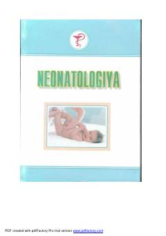

NPerinatal davr kasalliklari va chaqaloqlarni davolash usullariga bag'ishlangan tibbiy darslik.
Mazkur darslik Toshkent Pediatriya Tibbiyot Instituti neonatologiya kafedrasi xodimlari tomonidan yaratilgan bo'lib, perinatal davrda eng ko'p uchraydigan kasalliklarning patogenezi, terapiya va profilaktikasini yoritadi. Unda xavfi yuqori homiladorlikni olib borish xususiyatlari, homila va chaqaloq holatiga baho berish tamoyillari hamda zamonaviy davolash usullari bayon qilingan. Kitob tibbiyot oliy o'quv yurtlari talabalari, ordinator va aspirantlarga mo'ljallangan.